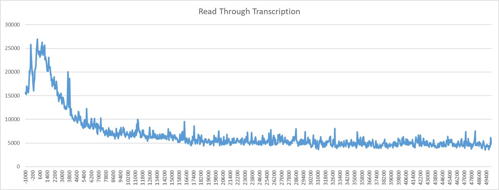

Read Through Transcription¶
The read_through_transcription tool computes the coverage of 3’ ends of sequencing data around the 3’ end of
features provided. This can be used to look at read through or runaway transcription by providing the gene body regions
file from truQuant.
Note
This tool requires bedtools to be installed.
Usage and option summary¶
Usage:
GC_bioinfo read_through_transcription [-h] [-t [threads]]
regions_filename tsr_file
upstream_distance
downstream_distance interval_size
sequencing_files
[sequencing_files ...]
Required Arguments |
Description |
|---|---|
Regions Filename |
Bed formatted file containing all the genes to quantify (regions will be determined from the 3’ end of each region in this file. |
TSR Filename |
tsrFinder output file which will be blacklisted. Simply type no to not blacklist TSRs. |
Upstream Distance |
The number of base pairs to subtract from the left position. |
Downstream Distance |
The number of base pairs to add from the left position. |
Interval Distance |
The size of sub-regions to split the regions into. |
Sequencing Files |
Sequencing files to quantify separated by spaces. |
Behavior¶
read_through_transcription will report the position relative to the 3’ end of the regions provided and the sum
of the 3’ reads at that interval.
For example:
$ head regions_centered_on_max_tss.bed
chr1 959251 959261 NOC2L 46 -
chr1 960627 960637 KLHL17 27 +
chr1 966516 966526 PLEKHN1 8 +
chr1 1000092 1000102 HES4 87 -
chr1 1000290 1000300 ISG15 12 +
chr1 1020114 1020124 AGRN 35 +
chr1 1074302 1074312 RNF223 10 -
chr1 1116102 1116112 C1orf159 9 -
chr1 1231967 1231977 SDF4 321 -
chr1 1232237 1232247 B3GALT6 174 +
$ head seq_file-blacklisted_150_20_30_600-TSR.tab
chr1 199198 199348 759 22 + 199260 199261 2 199258
chr1 628994 629144 604 20 + 629092 629093 2 629110
chr1 629431 629581 17821 380 + 629571 629572 188 629551
chr1 629651 629801 6747 206 + 629764 629765 25 629740
chr1 629900 630050 2345 69 + 629929 629930 6 629955
chr1 630309 630459 1511 48 + 630437 630438 7 630406
chr1 630604 630754 3435 80 + 630681 630682 21 630690
chr1 630780 630930 4601 113 + 630893 630894 16 630873
chr1 630999 631149 2722 68 + 631136 631137 6 631116
chr1 631204 631354 2843 85 + 631294 631295 11 631287
$ head seq_file.bed
chr1 11981 12023 A00876:119:HW5F5DRXX:1:2168:2248:1407 255 -
chr1 13099 13117 A00876:119:HW5F5DRXX:1:2203:31403:26757 255 -
chr1 13356 13423 A00876:119:HW5F5DRXX:1:2151:15808:7827 255 -
chr1 13435 13477 A00876:119:HW5F5DRXX:1:2273:15781:19241 255 -
chr1 13739 13772 A00876:119:HW5F5DRXX:1:2256:29966:10520 255 -
chr1 13741 13773 A00876:119:HW5F5DRXX:1:2235:4101:11882 255 -
chr1 14178 14203 A00876:119:HW5F5DRXX:1:2115:8241:31422 255 -
chr1 14734 14768 A00876:119:HW5F5DRXX:1:2165:23764:2440 255 -
chr1 14988 15012 A00876:119:HW5F5DRXX:1:2219:16134:32784 255 -
chr1 18337 18362 A00876:119:HW5F5DRXX:1:2149:32054:31328 255 -
$ GC_bioinfo read_through_transcription seq_file-blacklisted_150_20_30_600-gene_body_regions.bed \
seq_file-blacklisted_150_20_30_600-TSR.tab 1000 1000 100 seq_file.bed &
Position seq_file.bed
-1000 1924
-900 1808
-800 1762
-700 1695
-600 1807
-500 1856
-400 2999
-300 3838
-200 2055
-100 1911
0 1809
100 1878
200 1977
300 1905
400 1885
500 1890
600 1894
700 1790
800 1718
900 1740